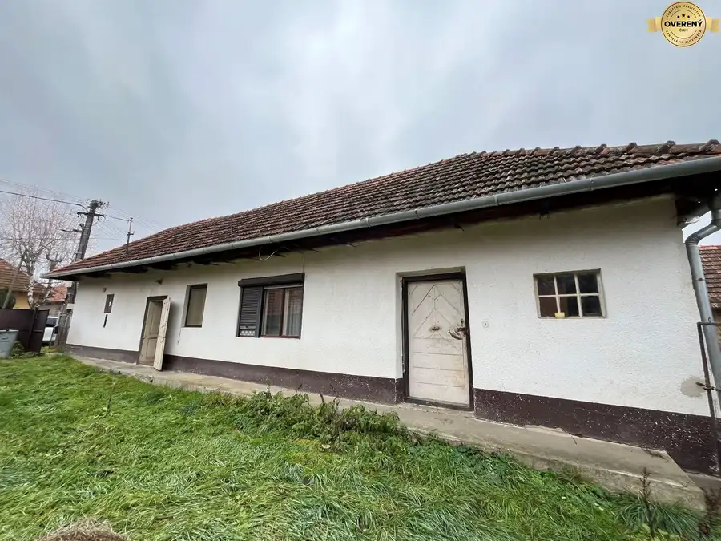
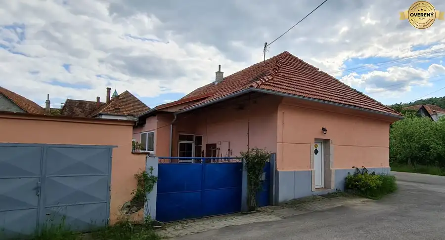
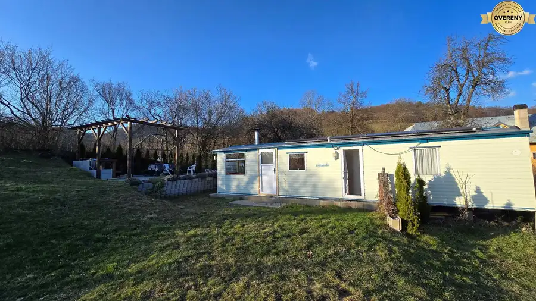

Pozemok na predaj, Banská Štiavnica
Banská Štiavnica
- Plocha285 m²
- Vlastníctvoosobné
O nehnuteľnosti
Center Reality.sk – si dovoľuje upútať vašu pozornosť ponukou na predaj pozemku s možnosťou výstavby rodinného domu alebo chalupy v Banskej Štiavnici.
Slnečný oplotený pozemok o celkovej rozlohe 285 m2 sa nachádza v intraviláne v okrajovej časti mesta v blízkosti jazera Komorovské. Prístup na pozemok je bezproblémový z asfaltovej cesty s možnosťou napojenia sa na inžinierske siete. Na pozemku sa nachádza orech, čerešňa a v zadnej časti za pozemkom preteká potôčik.
Tí, ktorí chcú, aby sa ich sen stal skutočnosťou a radi by si vytvorili bývanie podľa vlastných predstáv, tak práve tento pozemok je miestom, kde sa dajú realizovať všetky sny.
Mesto Banská Štiavnica, Vám ponúka nekonečné možnosti trávenia voľného času ako napr. návštevy reštaurácií, kaviarničiek, čajovní, vinární, pivární, divadlo, Banka lásky, Kalvária, banské múzeum, bane, botanická záhrada a mnohé iné. Milovníkov turistiky osloví množstvo turistických aj cyklo trás v Štiavnických vrchoch, pre vášnivých plavcov a ľudí hľadajúcich relax sú lákadlom štiavnické tajchy a lyžiari určite neodolajú lyžiarskemu stredisku Salamandra.
Všetci tí, ktorých táto ponuka zaujala a chcete vedieť viac, kontaktujte ma prosím na tel. , alebo email:
Parametre
| Rozloha pozemku | 285 m² |
|---|---|
| Vlastníctvo | osobné |
| Dátum zverejnenia | 31. 5. 2022 |
Kde to je
Mohlo by Vás zaujímať

Rodinné domyPredané10 PredanéRodinný dom na predaj, Bátovce okres Levice Bátovce 2-izbový100 m² Kamenný dom v pôvodnom ale zachovalom dobrom stave sa nachádza na krásnom veľkom slnečnom pozemku s celkovou výmerou 1.700 m2 v pokojnej tichej…
Rodinné domyPredané10 PredanéExkluzívne - meštiansky rodinný dom na predaj, Pukanec Pukanec 180 m² Center Reality.sk – si dovoľuje upútať vašu pozornosť exkluzívnou ponukou na predaj meštianskeho rodinného domu v centre malebnej obce Pukanec…
PozemokPredané10 PredanéMobilný dom s pozemkom, Štiavnické Bane Štiavnické Bane 260 m² Mobilný dom Atlas Everglade o rozmeroch 3x11m je umiestnený na slnečnom pozemku o rozlohe 260m2 s možnosťou využívať aj záhradu o rozlohe 696m2,…